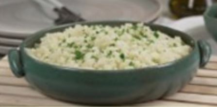

Arroz de Couve-Flor
- Arroz
- Couve-Flor
- Cebola Média
- Azeite
Modo de Preparo
Deixe a couve-flor picada. Adicine os ingredientes e refogue bem. Adicione sal, tampe a panela e deixe cozinhar.
Bolo de Café
- Farinha de Trigo
- Açucar
- Café Coado
- Chocolate em Pó
- Ovos
Modo de Preparo
Bata o açucar, as gemas e o café. Adicione farinha e chocolate e mexa bem. Bata as claras e junte á mistura
Coxinha de Brigadeiro
- Leite Condensado
- Chocolate em Pó
- Manteiga
- Morango
- Chocolate Granulado
Modo de Preparo
Junte o leite condensado, chocolate em pó e manteiga. Aqueça no fogo baixo. Envolva os morangos e passe no granulado.